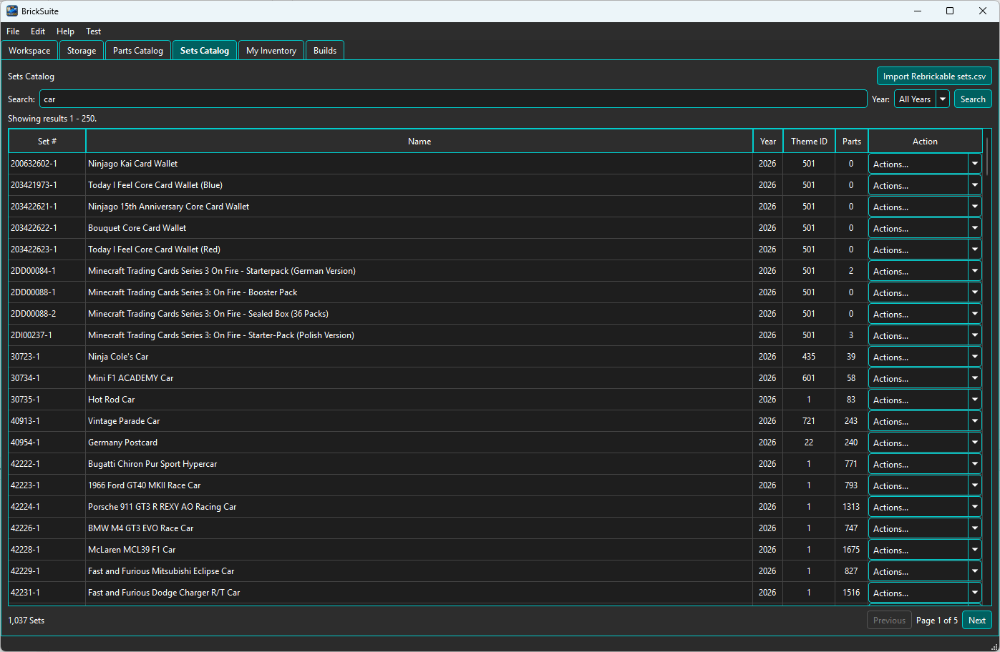
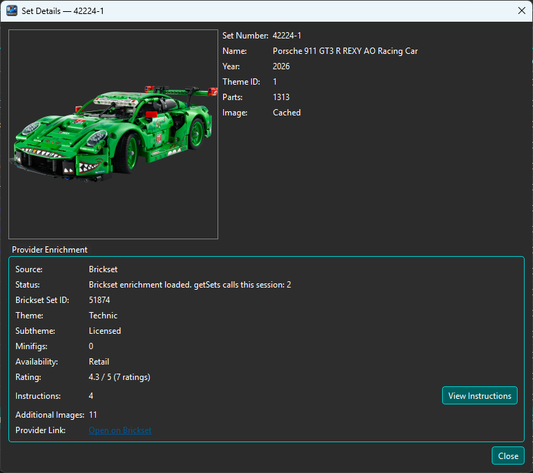
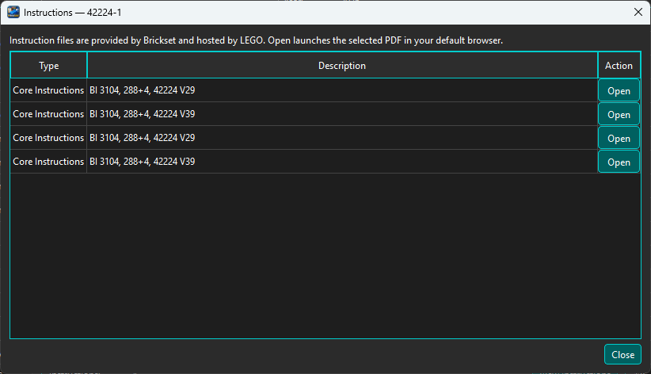
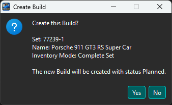

The Sets Catalog is BrickSuite's local reference catalog for LEGO Sets. It is populated from Rebrickable CSV data and can be searched without making a live API request for ordinary catalog browsing.

Use the Import Rebrickable sets.csv button at the top of the Sets Catalog to populate
or refresh the local catalog. Rebrickable distributes catalog downloads as ZIP archives, so
extract the archive before selecting the resulting sets.csv file in BrickSuite.
For the full first-time setup sequence, see Quick Start.
Use the Search field to look for a Set by number or name. The Year filter can narrow the results to a specific year. Choose Search to apply the current criteria.
The results table shows the Set number, name, year, Theme ID, parts count, and an Actions... control for each row. Paging controls at the bottom of the catalog let you move through larger result sets.
Open Actions... → Details for a Set to view its reference information and, when available, provider enrichment.

The upper portion of Set Details shows the local BrickSuite/Rebrickable reference information, including the Set number, name, year, Theme ID, parts count, and cached Set image when available.
The Provider Enrichment section identifies the active provider used for additional Set information. When Brickset is connected and within the configured daily request threshold, BrickSuite can use Brickset enrichment.
Brickset enrichment can include:
The Status line summarizes the provider state for the current Set and can also show
session information such as how many Brickset getSets calls have been made.
Provider configuration, connection testing, and the Brickset daily request threshold are described in Settings.
When Brickset enrichment is active and instruction information is available, Set Details shows a View Instructions button. Choose it to open the instruction list.

The Instructions dialog lists the available instruction files and identifies their type and description. Choose Open for the instruction you want to view.
BrickSuite does not host the instruction PDF itself. Instruction information is provided by Brickset and the PDF is hosted by LEGO. Choosing Open launches the selected PDF using your system's default web browser.
The provider link near the bottom of Set Details opens the current Set on the active provider's website using the system's default browser. For Brickset enrichment, the link is labeled Open on Brickset.
Use the Set row's Actions... control to create a Build from the selected Set when you want BrickSuite to track that Set as a buildable project. BrickSuite can then compare the Build's requirements with your available inventory.

For Build lifecycle and requirement management, see Builds. For allocation behavior, see Allocate Available.
BrickSuite caches Set images locally when they are available. A cached image can be displayed without downloading it again each time Set Details is opened.
Quick Start | Settings | Builds | Allocate Available | Troubleshooting